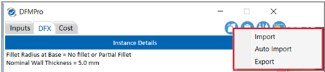
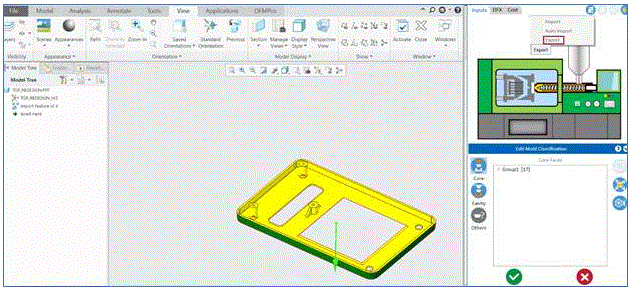

結果のエクスポート： Export Results コマンドを使用して、現在の解析結果を *.dfmr ファイル形式で保存します。ユーザーは、このファイルを DFMPro にインポートして結果を確認できます。
結果のインポート： Import Result コマンドを使用して、以前に保存した結果を表示するために *.dfmr ファイルを読み込みます。
DFMPro ユーザーインターフェース上で Import/Export オプションをクリックすると、選択したコマンドに応じて現在の解析結果がインポートまたはエクスポートされます。

インポート：DFMPro 設定でこのオプションを選択すると、DFMPro は *.dfmr ファイルを読み込み、以前に保存した結果を表示します。解析後、DFMPro の結果／レポートおよびパーツ／アセンブリのリビジョンは、チェックイン時に PLM システムに保存されます。
自動インポート：このオプションでは、結果が自動的にインポートされます（結果ファイルの保存場所を参照する必要はありません）。
DFMPro 設定で、自動インポート用の既定フォルダーを設定します。
エクスポート：DFMPro 設定でこのオプションを選択すると、DFMPro はレポートのエクスポート先を参照でき、現在の解析レポートを .dfmr ファイル形式で PLM システムに保存します。このファイルは DFMPro にインポートして再度結果を確認できます。
PLM（Windchill）連携で DFMPro for Creo Parametric を使用する方法については、演習ワークフローを参照してください。
Note:
複雑なパーツに対して、DFMPro は中間入力（引き抜き方向および金型分類）のエクスポート機能を提供します。ユーザーは金型分類を修正し、*.dfmr ファイルとしてエクスポートできます。修正された分類は、対象パーツが変更されていない場合、次回の解析で使用できます。
「中間入力のエクスポート」機能は、以下のプロセスでサポートされています：
射出成形
熱成形
真空注型
砂型鋳造
鋳造
ダイカスト
中間入力エクスポート機能の手順：
パーツを開き、射出成形を実行します。
パーツの引き抜き方向を指定し、金型分類を修正します。
入力内容を *.dfmr としてエクスポートします。
次回、パーツを開き、正しいルールファイルを構成します。
以前にエクスポートした入力結果をインポートし、解析を再実行します。
Note:
この中間入力機能は、DFMPro の PLM 連携が「ON」（PLM システムでの DFMPro 結果のエクスポート／インポートのチェックボックスが選択されている場合）のときは利用できません。
中間入力（*.dfmr ファイル）をインポートする前に、構成されているルールファイルが、エクスポートおよび保存したものと同一であることを確認してください。
